Reimagined as sleeves you flip.
Every 1990s production and remix credit, cover art first. Click a sleeve to flip it and read every pressing on the back, like flipping a record over to check the label.
Anything marked red is missing in lossless — either it's not in my collection, or a lossless copy just doesn't exist.
* just the 1990's
1990
 LP
LP
Basic Black — Basic Black
Sound Of New York
- 05. Special Kind of Fool
 Single
Single
Billy Davis — I Want You
Got Records
- I Want You (12″ Vocal)
- I Want You (7″)
- I Want You (Acappella)
- I Want You (Club Mix)
- I Want You (Drum Mix)
- I Want You (Dub I)
- I Want You (Dub II)
- I Want You (Short Edit)
 LP
LP
Glenn Jones — All Of You
Jive
- 03. Can We Try Again
- 06. Interlude Can We Try Again
 Single
Single
Guy — I Wanna Get With You
MCA Records
- I Wanna Get With U (12 Mix)
- I Wanna Get With U (12″ Version)
- I Wanna Get With U (7″ Mix)
- I Wanna Get With U (Acapella)
- I Wanna Get With U (Club Version)
- I Wanna Get With U (Hip-Hop Version)
- I Wanna Get With U (TR's Dub)
 LP
LP
Guy — The Future
MCA Records
- 01. Her
- 02. Wanna Get With
- 03. Do Me Right
- 04. Teddy's Jam 2
- 05. Let's Chill
- 06. Tease Me Tonite
- 07. D-O-G Me Out
- 08. Total Control
- 09. Gotta Be A Leader
- 10. The Future
- 11. Let's Stay Together
- 12. Where Did The Love Go
- 13. Yearning For Your Love
- 14. Smile
- 15. Long Gone
- 16. Wanna Get With U (Club Version)
 LP
LP
Hi-Five — Hi-Five
Jive Records
- 01. I Just Can't Handle It
- 03. I Like The Way (The Kissing Game)
 Single
Single
Hi-Five — I Just Can't Handle It
Jive Records
- I Just Can't Handle It (7″ Edit )
- I Just Can't Handle It (Album Version)
- I Just Can't Handle It (Club Mix)
- I Just Can't Handle It (Extended 12″ Version)
- I Just Can't Handle It (Hip Hop Mix)
- I Just Can't Handle It (Instrumental)
- I Just Can't Handle It (Percapella)
- I Just Can't Handle It (Teddy's 7 Edit)
 Single
Single
James J.T. Taylor — 8 Days A Week
MCA Records
- 8 Days A Week (12″ Club Mix)
- 8 Days A Week (Bonus Beats)
- 8 Days A Week (House Dub)
- 8 Days A Week (Radio Edit)
- 8 Days A Week (Sax Mix)
 Single
Single
Jane Child — Don't Wanna Fall In Love
Warner Bros. Records
- Don't Wanna Fall in Love (7″ Remix Version)
- Don't Wanna Fall in Love (AccaPercaPella)
- Don't Wanna Fall in Love (Bonus Beats)
- Don't Wanna Fall in Love (Knife Feel Good Mix)
- Don't Wanna Fall in Love (New Jack Swing Club)
- Don't Wanna Fall in Love (T.R. Club-A-Dub)
- Don't Wanna Fall in Love (T.R. Dub)
 LP
LP
Keith Sweat — I'll Give All My Love To You
Elektra
- 02. Make You Sweat
- 06. Your Love, Pt. 2
 Single
Single
Nayobe — I'll Be Around
WTG / Epic
- I'll Be Around (Extended Mix)
- I'll Be Around (Single Edit Version)
 LP
LP
Nayobe — Promise Me
WTG / Epic
- 01. I Love The Way You Love Me
- 02. I'll Be Around
- 03. Can't Let Go
 Single
Single
Quincy Jones feat. Siedah Garrett — I Don't Go For That
Qwest
- I Don't Go For That (Album Version)
- I Don't Go For That (M.T. Shaniqua Mix)
- I Don't Go For That (Mercenary Radio Mix)
- I Don't Go For That (MT Dude Mix)
- I Don't Go For That (MT M-Rap Version)
- I Don't Go For That (Teddy's Extended Mix)
- I Don't Go For That (Teddy's Freaky Jazz Groove)
- I Don't Go For That (Teddy's Mix)
- I Don't Go For That (Teddy's Sax Mix)
 Single
Single
Redhead Kingpin And The F.B.I. — We Rock The Mic Right
Virgin
- Superbad Superslick (12″ One World Mix)
- Superbad Superslick (Dub)
- Superbad Superslick (Rough & Heavy Mix)
- We Rock The Mic Right (12″ Mix)
- We Rock The Mic Right (Red's Groove)
 Single
Single
Samuelle — So You Like What You See
Atlantic
- So You Like What You See (12″ Remix)
- So You Like What You See (Acappella)
- So You Like What You See (Bonus Beats)
- So You Like What You See (Club Dub)
- So You Like What You See (Club Remix)
- So You Like What You See (Clubapella)
- So You Like What You See (Extended Remix)
- So You Like What You See (Rapapella)
 LP
LP
Starpoint — Have You Got What It Takes
Elektra
- 01. I Want You - You Want Me
- 02. Your Lover
- 04. Have You Got What It Takes
- 05. When They Love You Back
- 07. Step By Step
- 08. True Love
- 09. I Want You - You Want Me (Teddy's House Mix)
 Single
Single
Starpoint — I Want You - You Want Me
Elektra
- I Want You - You Want Me (Bonus Beats)
- I Want You - You Want Me (Edit Version)
- I Want You - You Want Me (Extended Version)
- I Want You - You Want Me (Hip Hop Mix)
 Single
Single
The Winans — It's Time
Qwest
- It's Time (12″ Remix)
- It's Time (7″ Remix)
- It's Time (Bonus Beats)
- It's Time (Club-A-Dub)
- It's Time (Edit)
- It's Time (LP Version)
- It's Time (New Jack Swing Mix)
- It's Time (Percapella)
 LP
LP
The Winans — Return
Qwest
- 01. It's Time
- 03. Don't Leave Me
- 04. A Friend
1991
 Single
Single
Bubba — I Like Your Style
Motown
- I Like Your Style (Dub)
- I Like Your Style (Extended Vocal Version)
- I Like Your Style (Instrumental)
- I Like Your Style (LP Version)
- I Like Your Style (Percapella)
- I Like Your Style (Radio Version)
 Single
Single
Guy — D-O-G Me Out
MCA Records
- D-O-G Me Out (Canine Club Version)
- D-O-G Me Out (Dogapella)
- D-O-G Me Out (Mike Nice Dub Mix)
- D-O-G Me Out (Mike Nice Mix)
- D-O-G Me Out (Single Edit With Rap)
- D-O-G Me Out (Single Edit)
- D-O-G Me Out (Wrecks N Effect Mix)
- D-O-G Me Out (Wrecks N Effect Rap)
- D-O-G Me Out (Wrecks N Effectstrumental)
 Single
Single
Guy — Do Me Right
MCA Records
- Do Me Right (7″ Edit)
- Do Me Right (Dave's Crazy Dub)
- Do Me Right (Extended Vocal Version)
- Do Me Right (Instrumental Version)
- Do Me Right (Pianopercapella)
- Do Me Right (Remixed Radio Edit)
- Do Me Right (Remixed Vocal Version)
- Do Me Right (The Heavy Mix 2) 6:45
- Do Me Right (The Heavy Mix) 7:02
 Single
Single
Guy — Her
MCA Records
- Her (7″ Mix)
- Her (Dub)
- Her (Extended Mix)
- Her (Hip Hop Edit)
- Her (House Mix)
- Her (Original Edit)
- Her (Original Mix)
 Single
Single
Guy — Let's Chill
MCA Records
- Let's Chill (Chilled Suite)
- Let's Chill (Chilled Vocal Version)
- Let's Chill (Edit)
- Let's Chill (Extended Remix Version)
- Let's Chill (Instrumental)
- Let's Chill (LP Version)
- Let's Chill (Quiet Storm Version)
- Let's Chill (Radio Edit)
- Let's Chill (Suite)
- Let's Chill (The Seduction Soliloquy)
 Single
Single
Guy — Let's Stay Together
MCA Records
- Let's Stay Together (Acapella)
- Let's Stay Together (Bonus Beats)
- Let's Stay Together (Club Bonus Beats)
- Let's Stay Together (Extended Club Version)
- Let's Stay Together (Extended Rap)
- Let's Stay Together (Extended Vocal Version)
- Let's Stay Together (Instrumental 2)
- Let's Stay Together (Instrumental)
- Let's Stay Together (Percussapella)
- Let's Stay Together (Radio Edit 2)
- Let's Stay Together (Radio Edit With Rap)
- Let's Stay Together (Radio Edit)
- Let's Stay Together (Single Edit 2)
- Let's Stay Together (Single Edit)
- Let's Stay Together (Suite)
- Let's Stay Together (T.R.'s Club Version)
 Single
Single
Heavy D. & The Boyz — Is It Good To You
MCA Records
- Is It Good To You (7″ Version)
- Is It Good To You (Home Mix #2)
- Is It Good To You (Instrumental)
 Single
Single
Heavy D. & The Boyz — Now That We Found Love
MCA Records
- Now That We Found Love (7″ Radio)
- Now That We Found Love (Club Version)
- Now That We Found Love (Instrumental)
 LP
LP
Heavy D. & The Boyz — Peaceful Journey
Uptown Records
- 01. Now That We Found Love
- 09. Is It Good To You
 Single
Single
Hi-Five — I Like The Way (The Kissing Game)
Jive Records
- I Like The Way (The Kissing Game) (Album Version)
- I Like The Way (The Kissing Game) (Instrumental)
 LP
LP
Keith Sweat — Keep It Comin'
Elektra
- 03. Why Me Baby
 Single
Single
Keith Sweat — Why Me Baby?
Elektra
- Why Me Baby? (Edit Of LP Version) 3:59
- Why Me Baby? (LP Version) 5:28
 Single
Single
Keith Sweat — Your Love
Elektra
- Your Love (Acappella) 5:10
- Your Love (Club Mix) 8:58
- Your Love (Instrumental) 5:52
- Your Love (Radio Version) 4:29
 Single
Single
Kool Moe Dee — Death Blow
Jive
- Death Blow (Instrumental)
- Death Blow (LP Version)
 LP
LP
Kool Moe Dee — Funke, Funke Wisdom
Jive
- 01. Intro
- 04. To The Beat Y'all
- 05. How Kool Can One Blackman Be
- 10. Death Blow
 Single
Single
Kool Moe Dee — How Kool Can One Blackman Be?
Jive
- How Kool Can One Blackman Be? (7″ Remix)
- How Kool Can One Blackman Be? (Instrumental)
- How Kool Can One Blackman Be? (LP Version)
- How Kool Can One Blackman Be? (Radio Version)
 LP
LP
Michael Jackson — Dangerous
Epic
- 01. Jam
- 02. Why You Wanna Trip On Me
- 03. In The Closet
- 04. She Drives Me Wild
- 05. Remember The Time
- 06. Can't Let Her Get Away
- 14. Dangerous
 LP
LP
Various — House Party 2 (Original Motion Picture Soundtrack)
MCA Records
- 04. Wrecks-N-Effect – Ready Or Not (House Party II New Jack Theme)
 LP
LP
Various — Juice (Original Motion Picture Soundtrack)
SOUL
- 03. Teddy Riley feat. Tammy Lucas – Is It Good To You
 LP
LP
Various — New Jack City (Music From The Motion Picture)
Giant Records
- 03. Guy – New Jack City (Explicit)
 Single
Single
Wrecks-N-Effect — Ready Or Not (House Party II New Jack Theme)
MCA Records
- Ready Or Not (Accapella)
- Ready Or Not (Extended Instrumental Version)
- Ready Or Not (Extended Vocal Version)
- Ready Or Not (LP Version)
- Ready Or Not (Suite)
- Ready Or Not (Wrecks-N-Effect Version)
1992
 LP
LP
Bobby Brown — Bobby
MCA Records
- 03. Two Can Play That Game
- 04. Get Away
- 05. Til The End Of Time
- 08. Lovin' You Down
- 09. One More Night
- 10. Something In Common feat. Whitney Houston
- 11. That's The Way Love Is
 Single
Single
Bobby Brown — Get Away
MCA Records
- Get Away (12″ Body)
- Get Away (Acapella)
- Get Away (Acapella)2
- Get Away (Bonus Beats)
- Get Away (Bonus Beats)2
- Get Away (Getaway Club Version)
- Get Away (Instrumental)
- Get Away (Percussapella)
- Get Away (Radio Edit)
- Get Away (Single Edit No Rap)
- Get Away (Single Edit With Rap)
- Get Away (Suite)
- Get Away (Teddy's Club Version)
- Get Away (Teddy's Dub)
- Get Away (Teddy's Radio Edit)
- Get Away (Teddy's Tribal Club Version)
 LP
LP
Glenn Jones — The Best Of Glenn Jones
Jive
- 09. Different
 Single
Single
Guy — Teddy's Jam 2
MCA Records
- Teddy's Jam 2 (Club A Dub Jam)
- Teddy's Jam 2 (Club Jam)
- Teddy's Jam 2 (Dub Jam)
- Teddy's Jam 2 (Jammin' Beats)
- Teddy's Jam 2 (Radio Jam)
- Teddy's Jam 2 (Single Jam)
 Single
Single
Michael Jackson — Jam
Epic
- Jam (7″ Edit)
- Jam (Percapella)
- Jam (Radio Edit Without Rap)
- Jam (Teddy's 12″ Mix)
- Jam (Teddy's Jam)
 Single
Single
Michael Jackson — Remember The Time
Epic
- Remember The Time (12″ Main Mix)
- Remember The Time (Acapella)
- Remember The Time (Bonus Beat 3)
- Remember The Time (New Jack Jazz Mix)
- Remember the Time (New Jack main mix)
- Remember The Time (New Jack Radio Mix)
 Single
Single
SWV — I'm So Into You
RCA
- I'm So Into You (Teddy's Extended Mix with Rap)
- I'm So Into You (Teddy's Instrumental Bonus)
- I'm So Into You (Teddy's Radio Mix with Rap)
- I'm So Into You (Teddy's Radio Mix)
 LP
LP
SWV — It's About Time
RCA
- 15. Right Here (Human Nature Radio Mix)
 Single
Single
SWV — Right Here
RCA
- Right Here (Extended Human Nature Mix)
- Right Here (Human Nature Bonus Beats)
- Right Here (Human Nature Radio Mix)
- Right Here (Quiet Storm Mix)
 Single
Single
Teddy Riley feat. Tammy Lucas — Is It Good To You
MCA Records
- Is It Good To You (12″ Mix)
- Is It Good To You (7 Remix)
- Is It Good To You (7″ Mix)
- Is It Good To You (Acapella)
- Is It Good To You (Acapella)2
- Is It Good To You (Black Radio Mix)
- Is It Good To You (Bonus Beat)
- Is It Good To You (Hip Hop extended Mix)
- Is It Good To You (Hip Hop Mix)
- Is It Good To You (In The Clubs Mix)
- Is It Good To You (Instrumental)
- Is It Good To You (Lucasade Mix)
- Is It Good To You (On The Radio Mix)
- Is It Good To You (Percapella)
 LP
LP
The Party — Free
Hollywood Records
- 01 Free
- 03 All About Love
- 09 At All Times
 Single
Single
The Party — Free
Hollywood Records
- Free (Album Version)
- Free (Radio Mix With Rap)
- Free (Radio Mix Without Rap)
 LP
LP
Various — Ferngully… The Last Rainforest (Original Motion Picture Soundtrack)
MCA Records
- 06. Guy – Land Of A Thousand Dances
 LP
LP
Wreckx-N-Effect — Hard Or Smooth
MCA Records
- 01. Rump Shaker
- 02. New Jack Swing II (Hard Version)
- 03. Wreckx Shop (Album Version)
- 04. Knock-N-Boots (Album Version)
- 05. Here We Come (Album Version)
- 06. Tell Me How You Feel (Album Version)
- 07. My Cutie (Album Version)
- 08. Wreckx-N-Effect (Album Version)
- 09. Ez Come Ez Go (What Goes Up Must Come Down) (Album Version)
- 10. Hard (Short)
- 11. Smooth (Short)
 Single
Single
Wreckx-N-Effect — Rump Shaker
MCA Records
- Rump Shaker (Bonus Beats)
- Rump Shaker (Dub)
- Rump Shaker (Percapella)
- Rump Shaker (Radio Mix)
- Rump Shaker (Radio Remix)
- Rump Shaker (Radio Remix) (Raggaside)
- Rump Shaker (Teddy 2)
 Single
Single
Wreckx-N-Effect — Wreckx Shop
MCA Records
- Wreckx Shop (Album Version)
- Wreckx Shop (Blacka Mix)
- Wreckx Shop (Club Dub)
- Wreckx Shop (Jamaica Mix)
- Wreckx Shop (Jazztrumental)
- Wreckx Shop (Posse Deep Mix)
- Wreckx Shop (Teddy's Mix With Fade)
- Wreckx Shop (Vocapella)
1993
 Single
Single
BLACKstreet — Baby Be Mine
MCA Records
- Baby Be Mine (12″ Remix)
- Baby Be Mine (Acapella)
- Baby Be Mine (Acapella)2
- Baby Be Mine (Album Version)
- Baby Be Mine (Bonus Beats)
- Baby Be Mine (Bonus Beats)2
- Baby Be Mine (Club Mix)
- Baby Be Mine (Dub 1)
- Baby Be Mine (Hip Hop Mix)
- Baby Be Mine (Instrumental Remix)
- Baby Be Mine (Instrumental)
- Baby Be Mine (LP Edit)
- Baby Be Mine (Movie Mix)
- Baby Be Mine (Percapella)
- Baby Be Mine (Radio Edit)
- Baby Be Mine (Radio Remix)
- Baby Be Mine (Radio Remixed Version)
 LP
LP
Bobby Brown — Remixes In The Key Of B
MCA Records
- 03. T.R.'s Get Away
- 05. She's My Lady
 Single
Single
Bobby Brown — That's The Way Love Is
MCA Records
- That's The Way Love Is (12″ Extended)
- That's The Way Love Is (7″ Version)
- That's The Way Love Is (Acapella)
- That's The Way Love Is (Bonus Beats)
- That's The Way Love Is (Club Version)
- That's The Way Love Is (Extended Version)
- That's The Way Love Is (Instrumental)
- That's The Way Love Is (LP Version (No Rap))
- That's The Way Love Is (LP Version)
- That's The Way Love Is (Ragamuffin Dub)2
- That's The Way Love Is (Raggamuffin Dub)
- That's The Way Love Is (Remixed Single Version)
- That's The Way Love Is (Reworked Extended Version)
- That's The Way Love Is (Reworked Radio Edit)
- That's The Way Love Is (Single Version)
- That's The Way Love Is (Suite)
 Single
Single
Bobby Brown Duet With Whitney Houston — Something In Common
MCA Records
- Something In Common (Dub)
- Something In Common (Extended Vocal Version)
- Something In Common (Quiet Storm Version)
- Something In Common (Radio Edit)
 Single
Single
Father — 69
Uptown Records
- 69 (Acappella)
- 69 (Album Instrumental)
- 69 (Album Version)
- 69 (Clean Radio Mix)
- 69 (Clean Remix Basic)
- 69 (Clean Sixty But No Nine Remix)
- 69 (Radio Edit)
- 69 (Uptown Swing Instrumental)
- 69 (Uptown Swing Remix)
 LP
LP
Father — Sex Is Law
Uptown Records
- 01. 69
 Single
Single
Jazzy Jeff & Fresh Prince — I'm Looking For The One (To Be With Me)
Jive Records
- I'm Looking For The One (To Be With Me) (12″ Mix)
- I'm Looking For The One (To Be With Me) (LP Version)
- I'm Looking For The One (To Be With Me) (Percapella)
- I'm Looking For The One (To Be With Me) (Video Version)
 LP
LP
Joey Lawrence — Joey Lawrence
Impact Records
- 02 Nothin' My Love Can't Fix
 Single
Single
LL Cool J — Stand By Your Man
Def Jam Recordings
- Stand By Your Man (Hip Hop Mix 1)
- Stand By Your Man (Hip Hop Mix 2)
- Stand By Your Man (New Jack Street Mix Instrumental)
- Stand By Your Man (New Jack Street Mix)
 Single
Single
Mary J. Blige — My Love
Uptown Records
- 01 My Love (Hip Hop With Rap)
- 01 My Love (Radio Version)
- 02 My Love (On Da Street)
- 02 My Love (Street Mix 1)
- 03 My Love (New Jack Jazz)
- 04 My Love (T.R. And Mary Mix)
- 05 My Love (Acappella)
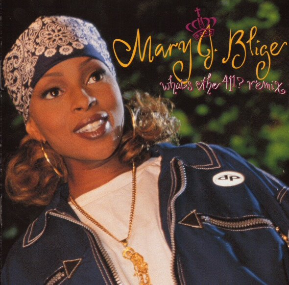
LPMary J. Blige — What's The 411 (Remix)
MCA Records
- 03. My Love (Remix)
- 11. Changes I've Been Going Through (Teddy Riley Remix)
 Single
Single
MC Lyte — I Go On
First Priority Music
- I Go On (Accapella)
- I Go On (Gangsta Mix)
- I Go On (Gangstamental)
- I Go On (Midnight Mix)
- I Go On (Midnightstrumental)
 LP
LP
Various — CB4
MCA Records
- 08. BLACKstreet – Baby Be Mine
 Single
Single
Wreckx-N-Effect — Knock-N-Boots
MCA Records
- Knock-N-Boots (Album Version)
- Knock-N-Boots (Bonus Dub)
- Knock-N-Boots (Chant Radio Mix)
- Knock-N-Boots (Instrumental)
- Knock-N-Boots (Radio Mix Acappella)
- Knock-N-Boots (Radio Mix)
 Single
Single
Wreckx-N-Effect — My Cutie
MCA Records
- My Cutie (Acappella)
- My Cutie (Album Version)
- My Cutie (Bonus Beats)
- My Cutie (Extended Version)
- My Cutie (Hard Cutie)
- My Cutie (Radio)
- My Cutie (Smooth Cutie)
1994
 Single
Single
9*1*1 — Cutie
Rip-It Records
- Cutie ("Baby Fingers" Mix)
- Cutie (Acapella)
- Cutie (Accapella)
- Cutie (Funk Mix With Rap)
- Cutie (Funk Mix Without Rap)
- Cutie (Instrumental Funk Remix)
- Cutie (Instrumental LP)
- Cutie (Instrumental)
- Cutie (LP Mix)
- Cutie (Perca-Pella)
- Cutie (Pianopella)
- Cutie (Pops Remix)
- Cutie (Silent Storm Mix W/ Bass)
 LP
LP
9*1*1 — The Pressure
P-Vine Records
- 01. Radio Interlude
- 02. Cutie
- 03. Higher
- 04. Spend Some Time
- 05. Recognize
- 06. My Heart Belongs to You
- 07. Catchin Feelins
- 08. The Ride
- 09. Do You Right
- 10. Misery
- 11. Space Interlude
- 12. Something About the Way
- 13. Make Me Say
- 14. The Pressure
- 15. Rescue Me
- 16. End of the Earth
- 17. Can't Get Enough (featuring Chance)
 Single
Single
Blackgirl — 90's Girl
Kaper Records / RCA
- 90's Girl (Encore A Cappella)
- 90's Girl (Encore Alt. Remix feat. Menton "Peanut" Smith) (Radio Edit)
- 90's Girl (Encore Extended Alt. Remix feat. Menton "Peanut" Smith)
- 90's Girl (Encore Extended Alt. Remix)
- 90's Girl (Encore Extended Club Mix)
- 90's Girl (Encore Instrumental)
- 90's Girl (Encore Remix W/Out Rap)
- 90's Girl (In The 90's Extended Mix)
- 90's Girl (In The 90's Radio Edit W/Out Rap)
- 90's Girl (In The 90's Radio Edit)
- 90's Girl (Video Edit feat. Antwone Dickey)
 Single
Single
BLACKstreet — Before I Let You Go
Interscope Records
- Before I Let You Go (Acapella Mix)
- Before I Let You Go (BLACKstreet Live Version)
- Before I Let You Go (Instrumental)
- Before I Let You Go (LP Version)
- Before I Let You Go (Main Mix One)
- Before I Let You Go (Main Mix Two)
- Before I Let You Go (Radio Edit)
- Before I Let You Go (Reggae Dub Mix)
- Before I Let You Go (Short Outro)
- Before I Let You Go (T.R. Mix)
 LP
LP
BLACKstreet — BLACKstreet
Interscope Records / Atlantic
- 01. Intro (BLACKstreet Philosophy) (Interlude)
- 02. Baby Be Mine
- 03. U Blow My Mind
- 04. Hey Love (Keep It Real) (Interlude)
- 05. I Like The Way You Work
- 06. Good Life
- 07. Physical Thing
- 08. Make U Wet
- 09. Booti Call
- 10. Love's In Need
- 11. Joy
- 12. Before I Let You Go
- 13. Confession (Interlude)
- 14. Falling In Love Again
- 15. Candlelight Night (Interlude)
- 16. Tonight's The Night
- 17. Happy Home
- 18. Once In A Lifetime (Interlude)
- 19. Wanna Make Love
- 20. Givin' You All My Lovin'
 LP
LP
BLACKstreet — BLACKstreet (Promo Cassette)
Interscope Records / Atlantic
- A1. Intro (Interlude)
- A2. Baby Be Mine
- A3. U Blow My Mind (alternative version)
- A4. Hey Love (Interlude)
- A5. I Like The Way You Work
- A6. Good Life
- A7. Bootknockalization (unreleased)
- A8. Physical Thing
- A9. Make U Wet (alternative version)
- A10. Birthday Song
- A11. Givin' You All My Lovin'
- A12. It's The Beat (unreleased)
- A13. Booti Call
- A14. I Like It (unreleased)
- B1. Love's In Need
- B2. Joy
- B3. Before I Let You Go
- B4. Confession (Interlude)
- B5. Falling In Love Again
- B6. Candlelight Night (Interlude)
- B7. Tonight's The Night
- B8. Happy Home
- B9. Don't Wanna Be Alone (unreleased)
- B10. Once In A Lifetime
 Single
Single
BLACKstreet — Booti Call / I Like The Way You Work
Interscope Records
- Booti Call (Clubadub Mix - K.C. Miami Mix)
- Booti Call (Doggie Dub Mix)
- Booti Call (Gotta Get U Home With Me Mix feat. T-Pirate)
- Booti Call (K.C. Miami Mix feat. T-Pirate)
- Booti Call (LP Version)
- Booti Call (No Booti - No Rap)
- Booti Call (No Booti - Radio Edit feat. T-Pirate)
- Booti Call (No Rap Radio Mix)
- Booti Call (T.R. Doggie Mix feat. T-Pirate)
- Booti Call (T.R. Pop Mix feat. T-Pirate)
- I Like The Way You Work (Ballad Mix)
- I Like The Way You Work (Papa Lee Mix feat. Nutta Butta)
- I Like The Way You Work (T.R. BLACKstreet Mix)
- I Like The Way You Work (T.R. Uptown Mix feat. Nutta Butta)
 Single
Single
BLACKstreet — U Blow My Mind
Interscope Records
- U Blow My Mind (Basic 3)
- U Blow My Mind (Club Basic 1)
- U Blow My Mind (Club Basic 2)
- U Blow My Mind (Craig Mack 2)
- U Blow My Mind (Craig Mack Basic 4)
- U Blow My Mind (Craig Mack Radio Mix)
- U Blow My Mind (LP Version)
- U Blow My Mind (Radio Mix)
 Single
Single
Eternal — Stay
EMI Records
- Stay (Club Mix)
- Stay (Eternal Mix)
- Stay (Extended Mix - Radio Edit)
- Stay (Extended Mix)
 Single
Single
Hammer — Pumps And A Bump
RCA
- Pumps And A Bump (Bump Teddy Bump Edit)
- Pumps And A Bump (Bump Teddy Bump Mix)
- Pumps And A Bump (Radio Edit)
 LP
LP
Hammer — The Funky Headhunter
Giant Records
- 04. Somethin' For The O.G.'s
- 05. Don't Stop
- 06. Pumps And A Bump
- 15. Pumps And A Bump Reprise (Bump Teddy Bump)
 LP
LP
Heavy D. & The Boyz — Nuttin' But Love
MCA Records
- 06. This Is Your Night
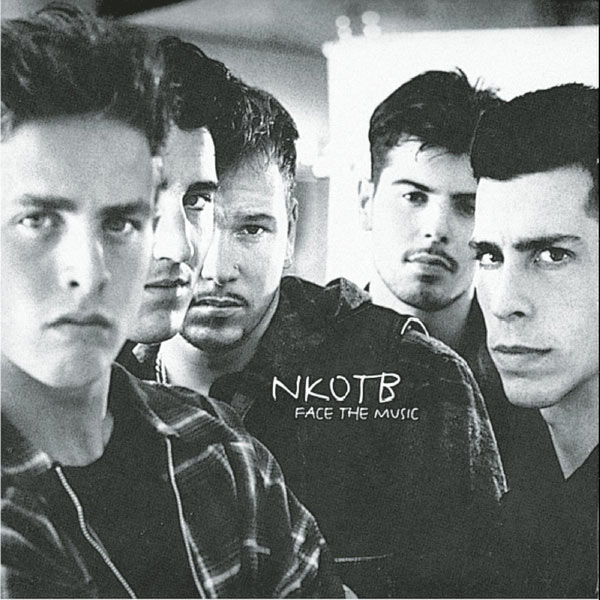
LPNKOTB — Face The Music
Columbia
- 2 You Got The Flavor
- 4 Girls
- 7 Never Let You Go
 LP
LP
Patti LaBelle — Gems
MCA Records
- 02. All This Love
- 04. This Word Is All
 Single
Single
Queen Latifah — Just Another Day
Motown
- Just Another Day (New Jack Extended Remix)
- Just Another Day (New Jack Percapella)
- Just Another Day (New Jack Remix)
 LP
LP
Quo — Quo
MJJ Music
- 05. Blowin' Up (Don't Stop The Music) (Teddy Riley Mix)
 Single
Single
R. Kelly — Summer Bunnies
Jive
- Summer Bunnies (Loverman's Picnic Dub Mix)
- Summer Bunnies (Loverman's Picnic Extended Mix)
- Summer Bunnies (Loverman's Picnic Mix 1)
- Summer Bunnies (Loverman's Picnic Mix 2)
 EP
EP
Teddy Riley — Nickel Bag Of Swing / Nickel Bag Of Tracks
Tuff City
- 01. Spoonie Gee – (I'm) All Shook Up
- 02. Spoonie Gee – Hit Man
- 03. Spoonie Gee – My Girl
- 04. Spoonie Gee – Didja Come To Party
- 05. Spoonie Gee – Didja Dub To Party
 Single
Single
The Rolling Stones — Love Is Strong
Virgin
- Love Is Strong (Teddy Riley Extended Dub Remix)
- Love Is Strong (Teddy Riley Extended Remix)
- Love Is Strong (Teddy Riley Extended Rock Remix)
- Love Is Strong (Teddy Riley Instrumental)
- Love Is Strong (Teddy Riley Radio Remix)
 LP
LP
Tom Jones — The Lead And How To Swing It
Interscope Records
- 05. Something For Your Head
- 06. Fly Away
 LP
LP
Various — Blankman (Music From The Motion Picture)
Epic Soundtrax
- 08. Keith "K.B." Ball – Live Into The Future
 Single
Single
Wreckx-N-Effect — Rim Shaker
MCA Records
- Rim Shaker (Radio Version)
- Rim Shaker (Underground Version)
- Rim Shaker (Zoom Zoom Version)
1995
 Single
Single
BLACKstreet — Joy
Interscope Records
- Joy (Cool Joy)
- Joy (Latin Combo)
- Joy (LP Version - No Rap)
- Joy (New Carnegie Mix)
- Joy (Quiet Storm)
- Joy (Uptown Joy Long)
- Joy (Uptown Joy)
 Single
Single
BLACKstreet — Tonight's The Night
Interscope Records
- Tonight's The Night (Album Mix feat. SWV)
- Tonight's The Night (Brand New Remix B2 feat. SWV, Craig Mack & Screwface)
- Tonight's The Night (Brand New Remix B3 feat. SWV & Craig Mack)
- Tonight's The Night (Brand New Remix B3 feat. SWV / No Rap)
- Tonight's The Night (Rain Remix Radio Edit feat. SWV & Craig Mack)
- Tonight's The Night (Reggae Remix feat. Screwface)
 LP
LP
Cheryl Lynn — Good Time
Avex Trax
- 01 Don't Wanna Be Mistreated
- 02 Good Time
- 04 If You Feel
- 06 Guarantee For My Heart
- 07 All My Loving
 Single
Single
Cheryl Lynn — Good Times
Avex UK
- Good Times (Riley's Radio Edit)
- Good Times (Teddy Riley's Full Vocal Mix)
 LP
LP
D.J. Hollywood — Rarities
Ol' Skool Flava
- Love In The Afternoon
- Love In The Afternoon (Instrumental)
- Check Out the Avenue
- Hollywood's Instrumental
- Hollywood Rap
- Hollywood Rap (Dub Pieces)
 Single
Single
Prince feat. Nona Gaye — The Love Sign EP
NPG Records
- Love Sign (Ted's Double Trouble Mix)
- Love Sign (Ted's Funky Chariot Mix)
- Love Sign (Ted's Get 'Em Up Mix)
- Love Sign (Ted's Love Sign Radio Mix)
 LP
LP
Pure Soul — Pure Soul
Interscope Records
- 02 Something About the Way That You Do
- 03 I Want You Back
 Single
Single
Tony Thompson — I Wanna Love Like That
Giant Records
- I Wanna Love Like That (Bonus Beat Vocal Mix)
- I Wanna Love Like That (Rap Mix)
- I Wanna Love Like That (S. Doogie Mix - No Rap)
- I Wanna Love Like That (S. Doogie Rap Mix)
- I Wanna Love Like That (Single Mix - No Rap)
- I Wanna Love Like That (Uptown Mix)
 LP
LP
Various — New York Undercover
MCA Records
- 02. Guy – Tell Me What You Like
 LP
LP
Various — Panther (The Original Motion Picture Soundtrack)
Mercury
- 03. BLACKstreet – We'll Meet Again
1996
 LP
LP
BLACKstreet — Another Level (Expanded Edition)
Interscope Records
- 01. Black & Street Intro
- 02. This Is How We Roll
- 03. No Diggity
- 04. Fix
- 05. Good Lovin'
- 06. Let's Stay In Love
- 07. We Gonna Take U Back (Lude) / Don't Leave Me
- 08. Never Gonna Let You Go
- 09. I Wanna Be Your Man
- 10. Taja's Lude (Interlude)
- 11. My Paradise (Interlude)
- 12. Deja's Poem
- 13. (Money Can't) Buy Me Love
- 14. BLACKstreet (On The Radio)
- 15. I Can't Get You (Out Of My Mind)
- 16. I'll Give It To You
- 17. Happy Song (Tonite)
- 18. Motherlude
- 19. The Lord Is Real (Time Will Reveal)
- 20. This Is Your Night
- 21. No Diggity (Instrumental)
- 22. No Diggity (Das Diggity Mix)
- 23. No Diggity (Billie Jean Remix)
- 24. No Diggity (All Star Remix)
- 25. No Diggity (Will Remix)
- 26. No Diggity (Teddy Riley Jungle Remix)
- 27. Happy Song (Tonite) (Full Crew Remix)
- 28. Don't Leave Me (D Remix)
- 29. Don't Leave Me (Goodbye Remix)
- 30. Don't Leave Me (Hip Hop Remix)
 Single
Single
BLACKstreet — No Diggity
Interscope Records
- No Diggity (Acapella)
- No Diggity (Album Version)
- No Diggity (All Star Remix Instrumental)
- No Diggity (All-Star Remix)
- No Diggity (Billie Jean Instrumental)
- No Diggity (Billie Jean Remix)
- No Diggity (BJ Das Extended)
- No Diggity (BJ Das Instrumental)
- No Diggity (Das Diggity Extended)
- No Diggity (Das Diggity Instrumental)
- No Diggity (Das Diggity Radio)
- No Diggity (Das Diggy Radio Mix)
- No Diggity (LP Instrumental)
- No Diggity (LP Version)
- No Diggity (Radio Version)
- No Diggity (Will Remix)
 Single
Single
Case — More To Love
Def Jam Recordings
- More To Love (Teddy Riley & JB Remix)
- More To Love (Teddy Riley Remix (A Capella)
- More To Love (Teddy Riley Remix (with Rap)
- More To Love (Teddy Riley Remix (Without Rap)
 Single
Single
Foxy Brown feat. BLACKstreet — Get Me Home
Def Jam Recordings
- Get Me Home (Edit)
- Get Me Home (Instrumental)
- Get Me Home (Main)
 Single
Single
Guy — Tell Me What You Like
MCA Records
- Tell Me What You Like (Linslee Remix)
 Single
Single
Men Of Vizion — Do Thangz
MJJ Music
- Do Thangz (Instrumental)
- Do Thangz (LP Version) (feat. Nutta Butta)
 Single
Single
Men Of Vizion — House Keeper
MJJ Music
- House Keeper (Instrumental)
- House Keeper (LP Version)
- House Keeper (Radio Edit)
 LP
LP
Men Of Vizion — Personal
MJJ Music
- 01. That's Alright
- 02. Instant Love
- 03. House Keeper
- 04. When You Need Someone
- 05. Forgive Me
- 06. Personal
- 07. Joyride (feat. Tasha Scott)
- 08. You Told Me You Loved Me
- 09. Do Thangz
- 10. Show You The Way To Go
- 11. It's Only Just A Dream
- 12. Night And Day
 Single
Single
Montell Jordan — Falling
Def Jam Recordings
- Falling (Teddy Riley Remix Instrumental)
- Falling (Teddy Riley Remix) feat. Shuanta
 Single
Single
Positive K — Black Cinderella
PosK Records
- Black Cinderella (Accapella)
- Black Cinderella (Instrumental)
- Black Cinderella (LP Mix)
- Black Cinderella (Radio Mix)
 Single
Single
Shawn — O.G
RCA
- O.G. (A Cappella)
- O.G. (Instrumental)
- O.G. (Radio Version)
 LP
LP
Teddy Riley — The Harlem Sessions
Ol' Skool Flava
- 01 - Al B. Just Two Mc's - Wong (Vocal)
- 02 - B-Fats - The B.Fats (Vocal)
- 03 - Al B. Just Two Mc's - Just Rap (Vocal)
- 04 - Al Jones - Cheating Girl (Vocal)
- 05 - Al B. Just Two Mc's - Wong (Instrumental)
- 06 - B-Fats - The B.Fats (Instrumental)
- 07 - Al B. Just Two Mc's - Just Rap ((Instrumental)
- 08 - Al Jones - Cheating Girl (Instrumental)
 LP
LP
Various — Get On The Bus (Music From And Inspired By The Motion Picture)
Interscope Records
- 13 BLACKstreet - Coming Home to You
 Single
Single
Whitney Houston — Step By Step
Arista
- Step By Step (Teddy Riley Remix)
 Single
Single
Wreckx-N-Effect — Raps New Generation
MCA Records
- Boomin System
- Criminal Minded
- Da Vapors
- Funk Box
- Funky (Interlude)
- Grandma (Interlude)
- Harlem (Interlude)
- Intro： New Generation
- It's Yours (Play On Playa)
- Move Da Crowd
- Outro
- Planet Rock
- Rap Acting School (Interlude)
- Somethin For Da Radio
- Sucka Mc's
- Tha Show
- Top Billin
 LP
LP
Wreckx-N-Effect — Top Billin
MCA Records
- 01 Top Billin (Radio Version)
- 02 Top Billin (LP Version)
- 03 Wreckx Shop (Remix)
- 04 Top Billin (Instrumental)
1997
 Single
Single
Big Bub — Need Your Love (Remix)
Kedar
- Need Your Love (Remix) (Acappella)
- Need Your Love (Remix) (Instrumental)
- Need Your Love (Remix) (Main Mix)
- Need Your Love (Remix) (Radio)
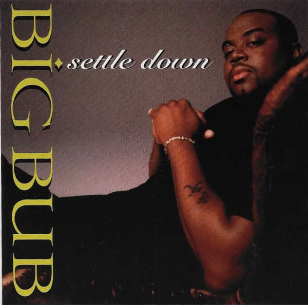
SingleBig Bub — Settle Down
Kedar
- Settle Down (Acapella)
- Settle Down (Album Version)
- Settle Down (Instrumental)
- Settle Down (Radio Edit)
 LP
LP
Big Bub — Timeless
Kedar
- 03 Call Me
- 04 Bring It On
- 05 My Way
- 06 Zoom
- 07 Settle Down
- 08 No One
- 09 Strung
- 10 Take It Off
- 11 Need Your Love (Remix)
 Single
Single
BLACKstreet — (Money Can't) Buy Me Love
Interscope Records
- (Money Can't) Buy Me Love (Album Version)
- Happy Song (Tonite) (Album Version
- Happy Song (Tonite) (Full Crew Remix
- Happy Song (Tonite) (Full Crew Remix Edit)
- Kofi's Real Live Turntable Mix
 Single
Single
BLACKstreet — Don't Leave Me
Interscope Records
- Don't Leave Me (A Capella)
- Don't Leave Me (D Remix - Main)
- Don't Leave Me (D Remix - Radio Fade)
- Don't Leave Me (Goodbye Remix - Main)
- Don't Leave Me (Goodbye Remix - Radio Fade)
- Don't Leave Me (Hip-Hop Extended Instrumental)
- Don't Leave Me (Hip-Hop Mix - Radio Fade)
- Don't Leave Me (Hip-Hop Remix - Extended)
- Don't Leave Me (Instrumental)
- Don't Leave Me (Kooly High Acapella)
- Don't Leave Me (Kooly High Mix)
- Don't Leave Me (LP Version)
- Don't Leave Me (Radio Edit)
 Single
Single
BLACKstreet — Fix
Interscope Records
- Call Me (Dezo R&B Mix Instrumental)
- Fix (Album Version)
- Fix (Call Me Dezo R&B Mix Version)
- Fix (main mix 2)
- Fix (Main Mix A Capella)
- Fix (Main Mix feat. Slash And Ol' Dirty Bastard)
- Fix (Main Mix Instrumental Version)
- Fix (Main Mix Version)
- Fix (main mix)
- Fix (main mix) (no rap version)
- Fix (Smooth Shomari mix)
 Single
Single
BLACKstreet — Never Gonna Let You Go
Interscope Records
- Never Gonna Let You Go (A Capella)
- Never Gonna Let You Go (Instrumental)
- Never Gonna Let You Go (LP Version)
- Never Gonna Let You Go (Radio Edit)
 Single
Single
BLACKstreet feat. Jay-Z — Call Me
LaFace Records
- Call Me (Acapella Version)
- Call Me (Album Instrumental)
- Call Me (Album Version)
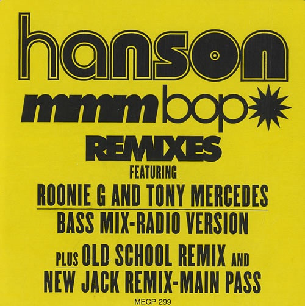
SingleHanson — Mmm Bop (Remixes)
Mercury
- Mmm Bop (New Jack Remix-Main Pass)
- Mmm Bop (Old School Remix)
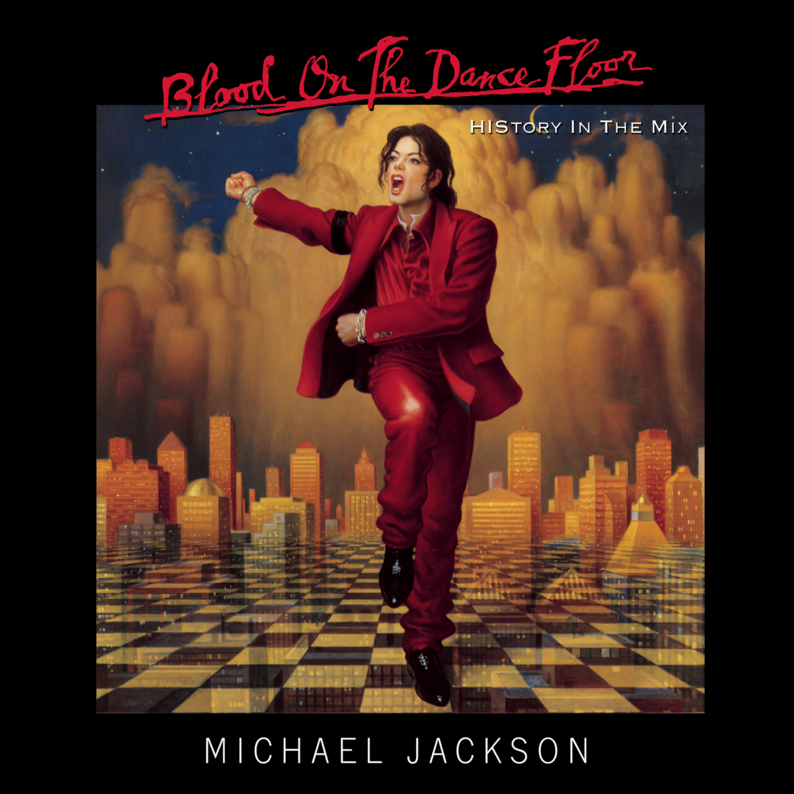
LPMichael Jackson — Blood On The Dance Floor / HIStory In The Mix
Epic
- 01. Blood on the Dance Floor
- 04. Ghosts
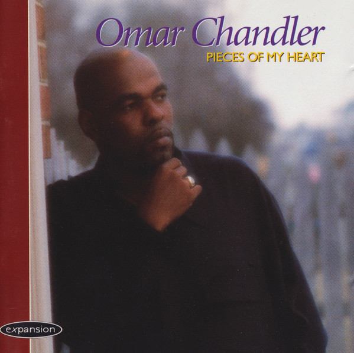
LPOmar Chandler — Pieces Of My Heart
Expansion
- 09 Omar Chandler feat. Teddy Riley - Guess Who's Back
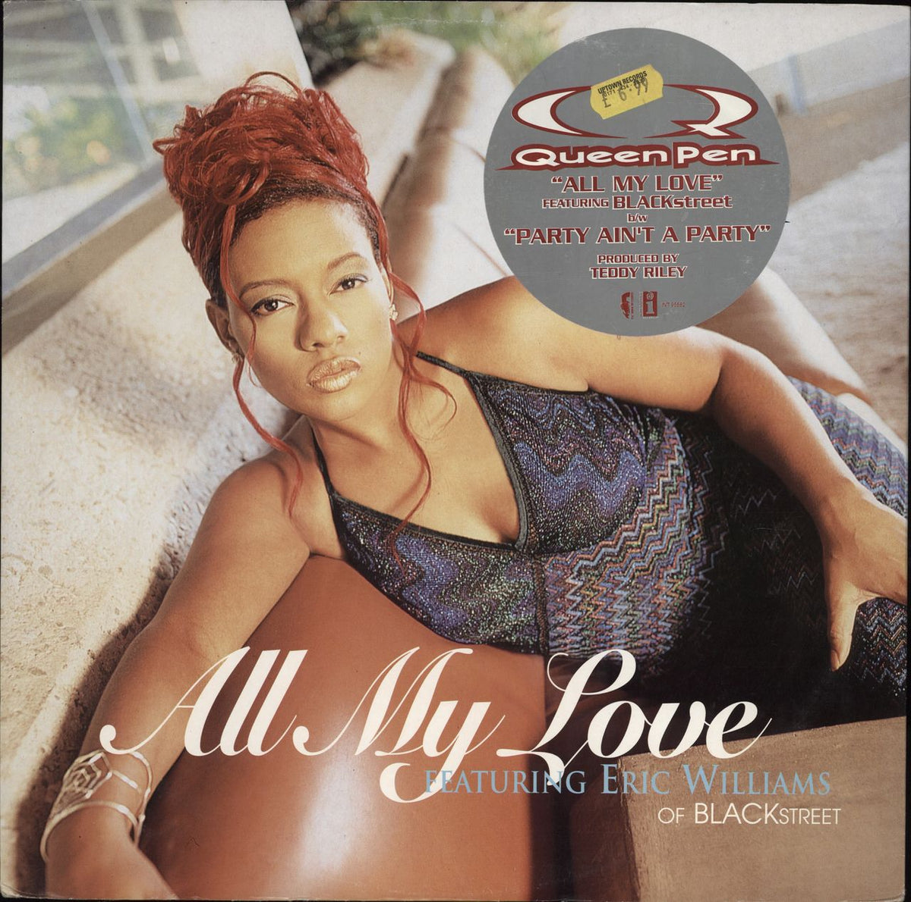
SingleQueen Pen — All My Love
Lil' Man Records / Interscope
- All My Love (Acapella)
- All My Love (Album Version)
- All My Love (Clean Radio Mix)
- All My Love (Hook First Acapella)
- All My Love (Hook First Short Version)
- All My Love (Hook First)
- All My Love (Instrumental)
- All My Love (Radio Edit)
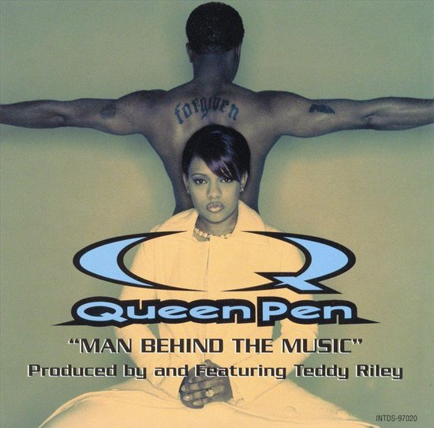
SingleQueen Pen — Man Behind The Music
Lil' Man Records / Interscope
- Man Behind The Music (Acapella, 2:20)
- Man Behind The Music (Acapella, 4:01)
- Man Behind The Music (Instrumental, 2:20)
- Man Behind The Music (Instrumental, 4:10)
- Man Behind The Music (Main Mix, 2:20)
- Man Behind The Music (Main Mix, 4:11)
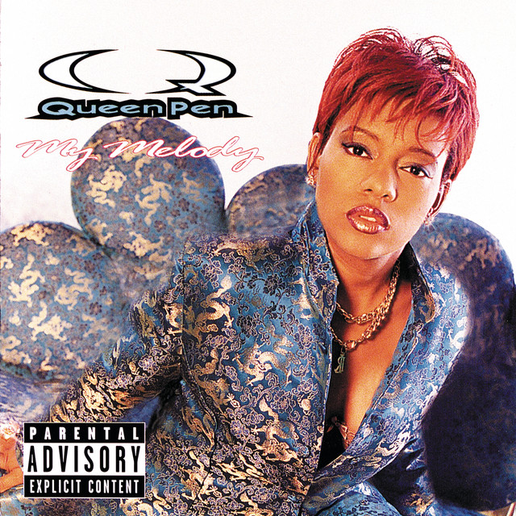
LPQueen Pen — My Melody
Lil' Man Records / Interscope
- 01. Queen Pen - Intro
- 02. Queen Of The Click
- 03. Man Behind The Music
- 04. All My Love
- 05. My Melody
- 06. Party Ain't A Party
- 07. It's True
- 08. The Set Up
- 09. Get Away
- 10. I'm Gon Blow Up
- 11. Girlfriend
- 12. No Hooks
- 13. So Many Ways
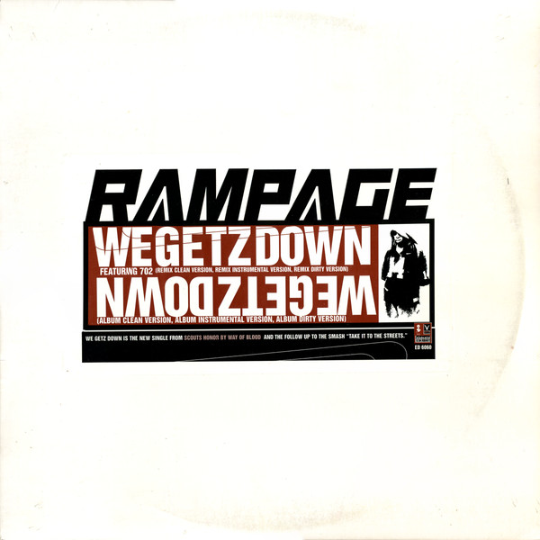
SingleRampage — We Getz Down
Elektra
- We Getz Down (Album Version)
- We Getz Down (Album Version-Instrumental)
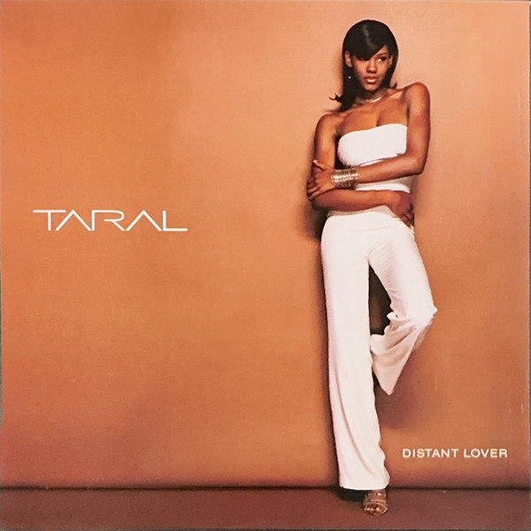
SingleTaral — Distant Lover
Motown
- Distant Lover (A Cappella)
- Distant Lover (Drumpella)
- Distant Lover (Instrumental)
- Distant Lover (LP Version)
- Distant Lover (Radio Edit)
- Distant Lover (Teddy Riley Extended Mix)
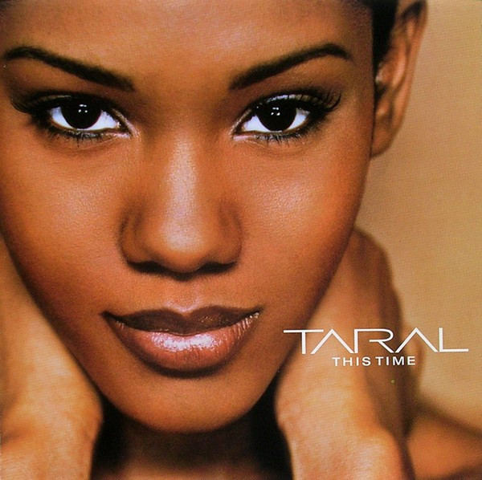
LPTaral — This Time
Motown
- 01 - Anyway
- 02 - Distant Lover
- 03 - How Can I Get Over You
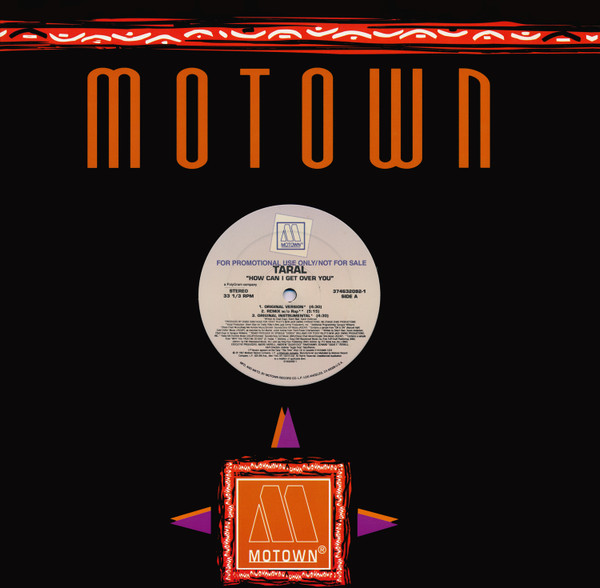
SingleTaral feat. LL Cool J — How Can I Get Over You (Remix)
Motown
- How Can I Get Over You (Acapella)
- How Can I Get Over You (Radio Edit)
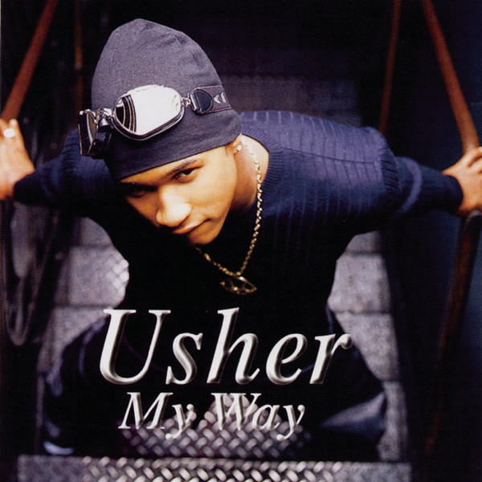
LPUsher — My Way
LaFace
- 07. - I Will
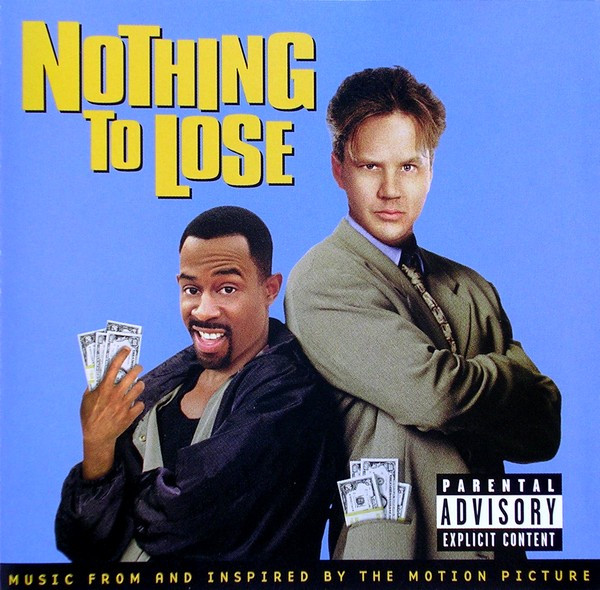
LPVarious — Nothing To Lose - Music From And Inspired By The Motion Picture
Tommy Boy
- 911 (US) feat. Queen Pen - In A Magazine
1998
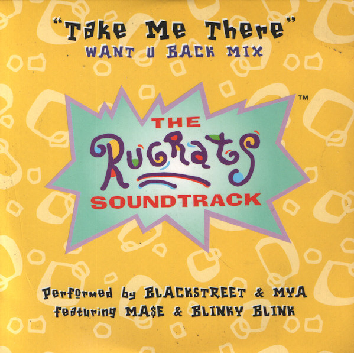
SingleBLACKstreet & Mya feat. Ma$e & Blinky Blink — Take Me There
Interscope
- Take Me There (Album Version)
- Take Me There (Instrumental)
- Take Me There (Radio Version Without Intro)
- Take Me There (Radio Version)
- Take Me There (Want U Back Instrumental Mix)
- Take Me There (Want U Back Mix – No Rap Version)
- Take Me There (Want U Back Mix – Short Edit)
- Take Me There (Want U Back Mix – Short No Rap Version)
- Take Me There (Want U Back Mix)
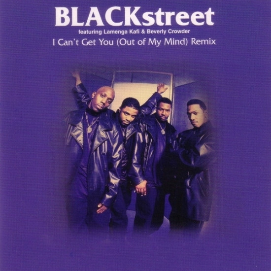
SingleBLACKstreet feat. LaMenga Kafi & Beverly Crowder — I Can't Get You (Out Of My Mind) Remix
Interscope
- I Can't Get You (Out Of My Mind) Remix
- I Can't Get You (Out Of My Mind) Remix (Instrumental)
- I Can't Get You (Out Of My Mind) Remix (Radio Edit)
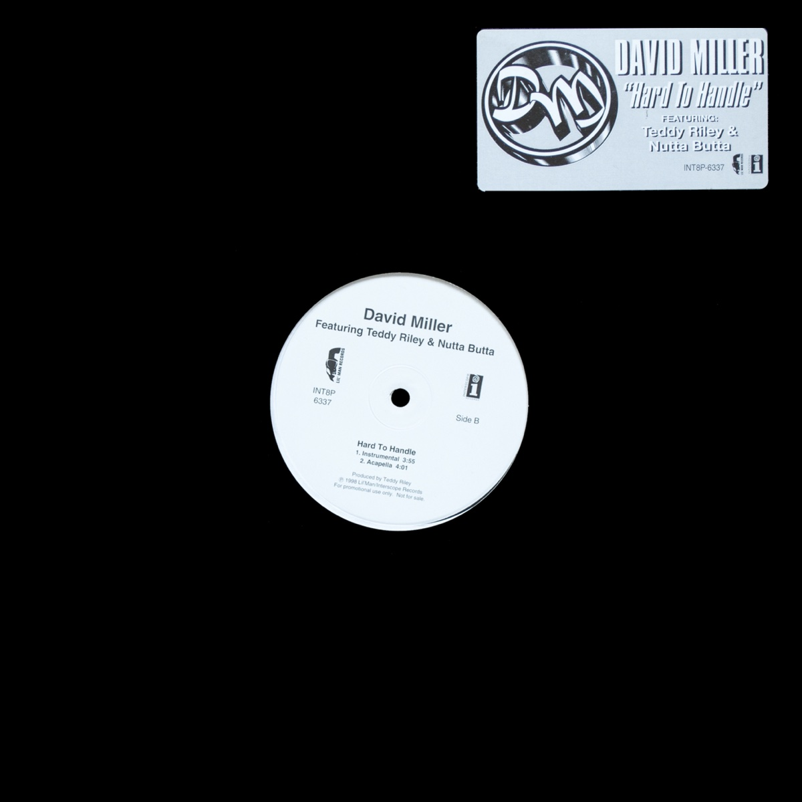
SingleDavid Miller feat. Teddy Riley & Nutta Butta — Hard To Handle
Lil' Man Records/Interscope
- Hard To Handle (Acappella)
- Hard To Handle (Instrumental)
- Hard To Handle (LP Version)
- Hard To Handle (TV Track)
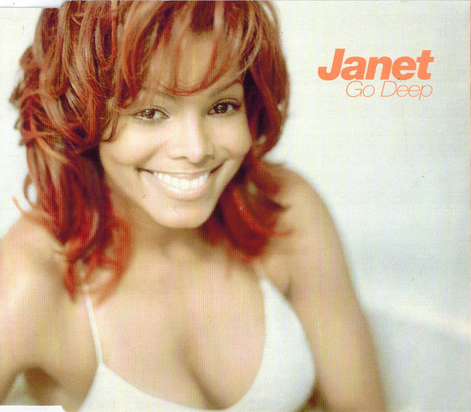
SingleJanet Jackson — Go Deep
Virgin
- Go Deep (Call Out Hook - Teddy Riley Nation Remix)
- Go Deep (T.R. Funk Mix)
- Go Deep (Teddy Riley Funk Remix # 2)
- Go Deep (Teddy Riley Funk Remix)
- Go Deep (Teddy Riley Funk Remix)
- Go Deep (Teddy Riley Nation Mix)
- Go Deep (Teddy Riley Nation Remix - Clean Version)
- Go Deep (Teddy Riley RDMC Main Mix)
- Go Deep (Teddy Riley Remix) #2
Janet Jackson feat. BLACKstreet — I Get Lonely
Virgin
- I Get Lonely (Extended Street Remix)
- I Get Lonely (TNT Bonus Beat Remix)
- I Get Lonely (TNT Bonus Beats)
- I Get Lonely (TNT Remix Edit)
- I Get Lonely (TNT Remix)
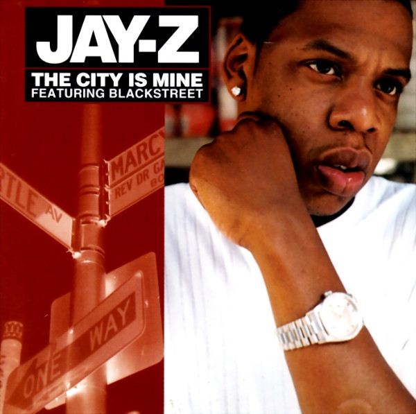
SingleJay-Z feat. BLACKstreet — The City Is Mine
Roc-A-Fella Records
- The City Is Mine (Accapella)
- The City Is Mine (Dirty Version)
- The City Is Mine (Instrumental)
- The City Is Mine (Radio Edit)
- The City Is Mine (TV Track)
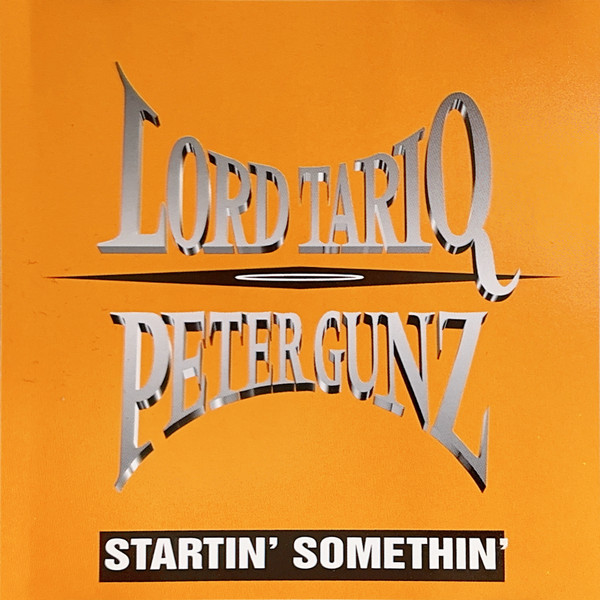
SingleLord Tariq & Peter Gunz — Startin' Somethin'
Columbia
- Startin' Somethin' (Acappella)
- Startin' Somethin' (Callout Hook #1)
- Startin' Somethin' (Callout Hook #2)
- Startin' Somethin' (Clean Version)
- Startin' Somethin' (Instrumental)
Lord Tariq, Peter Gunz — Make It Reign
Columbia
- 07 Then & Now Interlude
- 08 Startin' Somethin' (Feat. Chauncey Black)
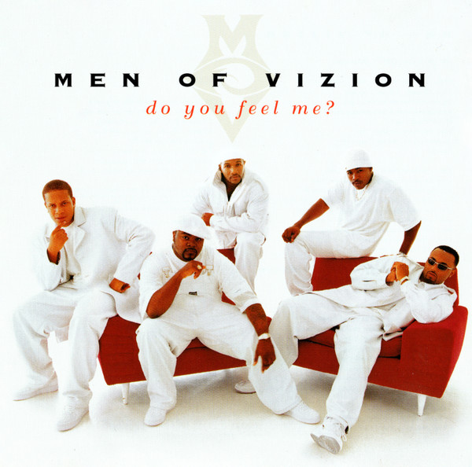
LPMen Of Vizion — Do You Feel Me (...Freak You)
MJJ Music
- Do You Feel Me? (...Freak You) (Single Edit)
- 01 - Do You Feel Me (...Freak You) (Extended Version) (Clean With Rap)
- 02 - Do You Feel Me (...Freak You) (Extended Version) (Dirty With Rap)
- 03 - Do You Feel Me (...Freak You) (Instrumental)
- 04 - Do You Feel Me (...Freak You) (A Cappella)
- Do You Feel Me? (...Freak You) (Uptempo Remix with Rap)
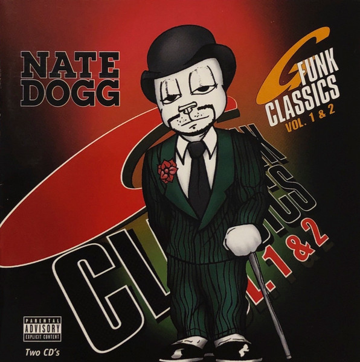
SingleNate Dogg — G-Funk Classics Vol. 1 & 2 / Ghetto Preacher & The Prodigal Son
Breakaway Entertainment
- Hardest Man in Town (Explicit)
Nutta Butta — Freak Out
Lil' Man Records
- feat. B.B.O., Knowledge The Pirate & Teddy Riley - Freak Out (Acapella Mix)
- feat. B.B.O., Knowledge The Pirate & Teddy Riley - Freak Out (Main Mix)
- feat. B.B.O., Knowledge The Pirate & Teddy Riley - Freak Out (Remix) (Acapella Mix)
- feat. B.B.O., Knowledge The Pirate & Teddy Riley - Freak Out (Remix) (Alternate Clean)
- feat. B.B.O., Knowledge The Pirate & Teddy Riley - Freak Out (Remix) (Alternate Vocal)
- feat. B.B.O., Knowledge The Pirate & Teddy Riley - Freak Out (Remix) (Instrumental)
- feat. B.B.O., Knowledge The Pirate & Teddy Riley - Freak Out (Remix) (Main Clean)
- feat. B.B.O., Knowledge The Pirate & Teddy Riley - Freak Out (Remix) (Main Vocal Mix)
- feat. B.B.O., Knowledge The Pirate & Teddy Riley - Freak Out (Remix) (Main Vocal)
- feat. Teddy Riley & Anonymous - Freak Out (Clean)
- feat. Teddy Riley & Anonymous - Freak Out (Dirty)
- feat. Teddy Riley & Anonymous - Freak Out (Instrumental)
- feat. Teddy Riley & Anonymous - Freak Out (Main Mix)
- Freak Out (Instrumental Main Mix)
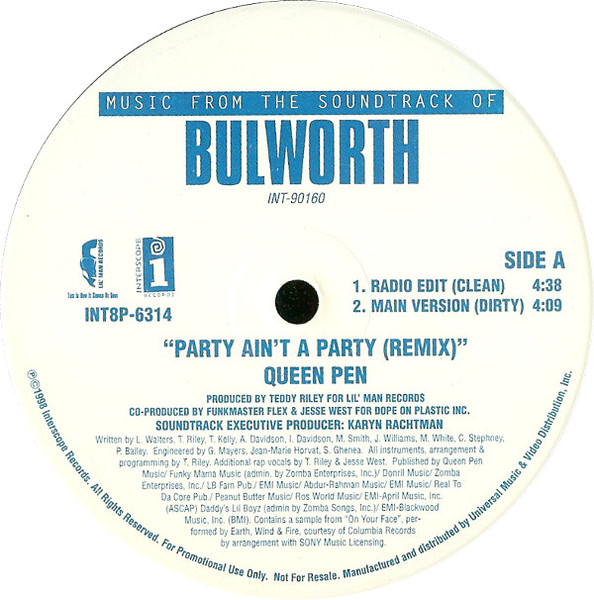
SingleQueen Pen — Party Ain't A Party
Lil' Man Records
- feat. Markell, Mr. Cheeks & Teddy Riley - Party Ain't A Party (Acapella)
- feat. Markell, Mr. Cheeks & Teddy Riley - Party Ain't A Party (Instrumental)
- feat. Markell, Mr. Cheeks & Teddy Riley - Party Ain't A Party (LP Version)
- feat. Markell, Mr. Cheeks & Teddy Riley - Party Ain't A Party (Radio Edit) (Clean)
- feat. Teddy Riley, Nutta Butta, Markell & Jesse West - Party Ain't A Party (Remix Clean)
- feat. Teddy Riley, Nutta Butta, Markell & Jesse West - Party Ain't A Party (Remix Dirty)
- feat. Teddy Riley, Nutta Butta, Markell & Jesse West - Party Ain't A Party (Remix) (Acappella)
- feat. Teddy Riley, Nutta Butta, Markell & Jesse West - Party Ain't A Party (Remix) (Instrumental)
- feat. Teddy Riley, Nutta Butta, Markell & Jesse West - Party Ain't A Party (Remix) (Main Version (Dirty))
- feat. Teddy Riley, Nutta Butta, Markell & Jesse West - Party Ain't A Party (Remix) (Radio Edit (Clean))
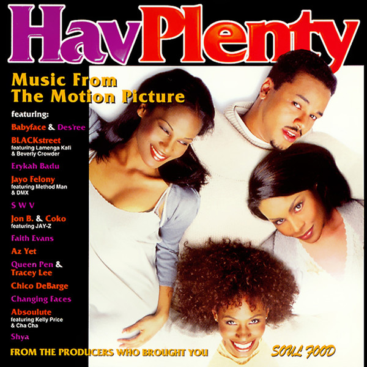
LPVarious — Hav Plenty (Music From The Motion Picture)
Yay Yum / 550 Music
- 05 BLACKstreet feat. Beverly Crowder & Lamenga Kafi - I Can't Get You (Out Of My Mind) (Remix)
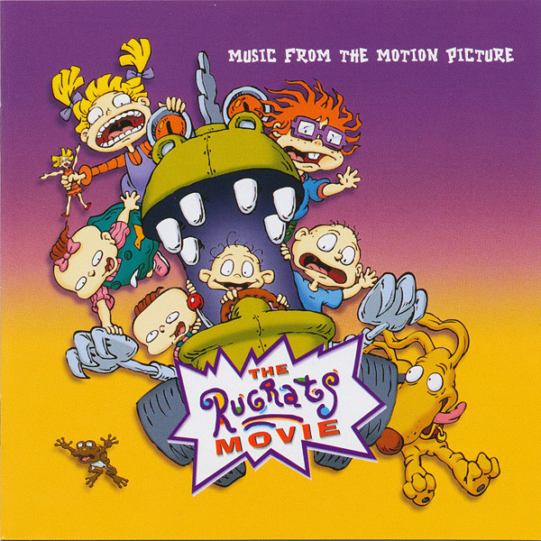
LPVarious — Music From The Motion Picture The Rugrats Movie
Interscope
- 01 BLACKstreet & Mya feat. Ma$e & Blinky Blink - Take Me There
1999
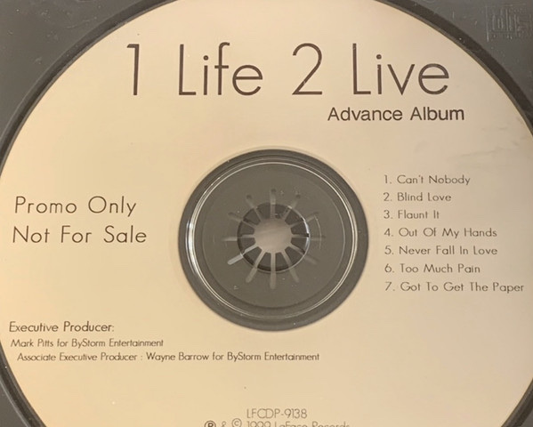
LP1 Life 2 Live — 1 Life 2 Live
ByStorm Entertainment / LaFace Records
- Flaunt It
- Flaunt It (Instrumental)
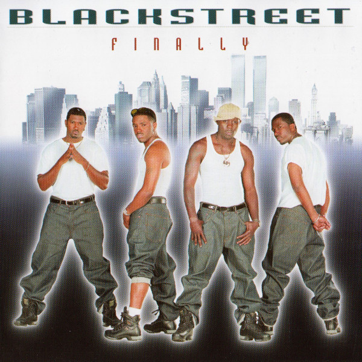
LPBLACKstreet — Finally
Interscope Records / Lil' Man Records
- BLACKstreet Intro — Can You Feel Me
- feat. Eve & Ja Rule - Girlfriend / Boyfriend
- feat. Sauce Money - Yo Love
- feat. Beanie Sigel - I Got What You On
- feat. S Gary - Drama - Misery Interlude
- feat. 8th Avenue - I'm Sorry
- Think About You
- Black & White
- In A Rush
- Hustler's Prayer
- Finally
- Take Me There (Remix)
- Don't Stop
- Confused
- feat. 8th Ave. & Queen Pen - On The Floor
- Don't Stop
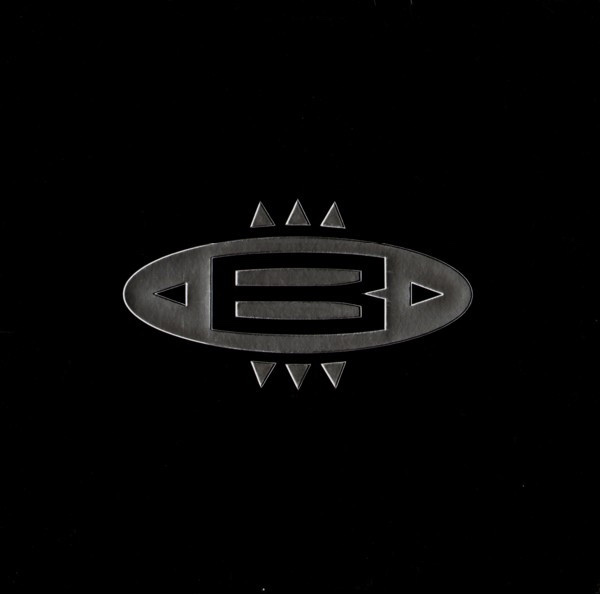
SingleBLACKstreet — Girlfriend / Boyfriend
Lil' Man Records / Interscope
- Girlfriend / Boyfriend (A Cappella)
- Girlfriend / Boyfriend (Clean Version)
- Girlfriend / Boyfriend (Club Mix)
- Girlfriend / Boyfriend (Dirty Version)
- Girlfriend / Boyfriend (Grand Jury Carson A Capella)
- Girlfriend / Boyfriend (Grand Jury Carson Instrumental)
- Girlfriend / Boyfriend (Grand Jury Carson Main Radio Remix)
- Girlfriend / Boyfriend (Grand Jury Carson Mix)
- Girlfriend / Boyfriend (Grand Jury Carson Rap Drop / Radio Fade)
- Girlfriend / Boyfriend (Grand Jury Pasadena Mix Instrumental)
- Girlfriend / Boyfriend (Grand Jury Pasadena Mix)
- Girlfriend / Boyfriend (Grand Jury Pasadena Remix)
- Girlfriend / Boyfriend (House A Capella)
- Girlfriend / Boyfriend (House Instrumental)
- Girlfriend / Boyfriend (House Mix)
- Girlfriend / Boyfriend (Instrumental)
- Girlfriend / Boyfriend (Rap Version)
- Girlfriend / Boyfriend (The Anthem Instrumental)
- Girlfriend / Boyfriend (The Anthem Remix)
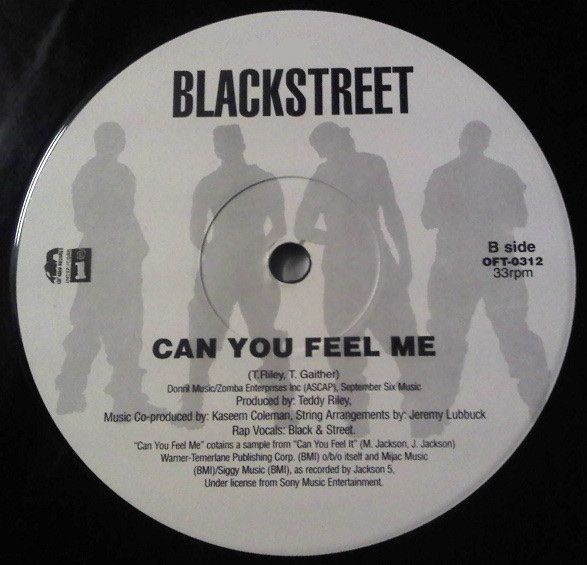
SingleBLACKstreet — On The Floor / Can You Feel Me
Lil' Man Records / Interscope
- Can You Feel Me
- On The Floor
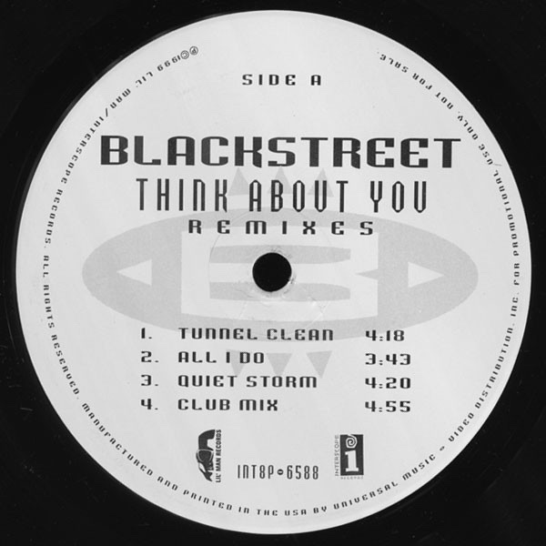
SingleBLACKstreet — Think About You
Lil' Man Records / Interscope
- Think About You (Album Instrumental)
- Think About You (Album)
- Think About You (All I Do Instrumental)
- Think About You (All I Do)
- Think About You (Club Mix Instrumental)
- Think About You (Club Mix)
- Think About You (Quiet Storm Instrumental)
- Think About You (Quiet Storm)
- Think About You (Tunnel Clean)
- Think About You (Tunnel Instrumental)
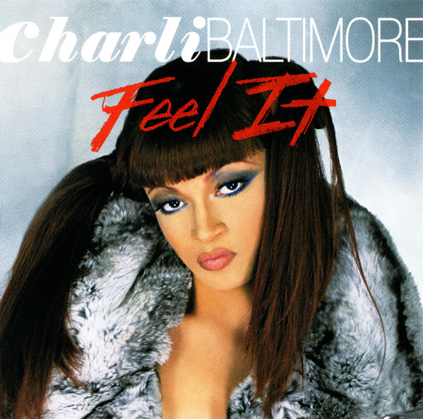
SingleCharli Baltimore — Feel It
Epic
- Feel It (Dirty Version)
- Feel It (Instrumental)
- Feel It (Radio Edit)
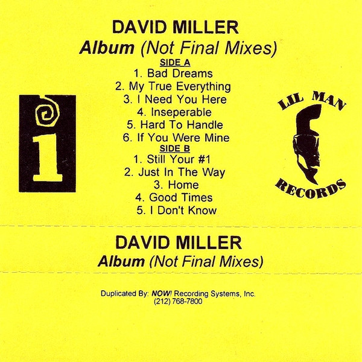
LPDavid Miller — Album (Not Final Mixes)
Lil' Man Records / Interscope
- 01. Bad Dreams
- 02. My True Everything
- 03. I Need You Here
- 04. Inseperable
- 05. Hard To Handle
- 06. If You Were Mine
- 07. Still Your #1
- 08. Just In The Way
- 09. Home
- 10. Good Times
- 11. I Don't Know
 Single
Single
Guy — Diamonds
Lil' Man Records
- Diamonds (Aaron Vocal)
- Diamonds (Acapella)
- Diamonds (Background Vocal)
- Diamonds (Instrumental)
- Diamonds (Main Mix)
- Diamonds (TR Talk)
- Diamonds (TV Track)
Single
Guy — Don't You Miss Me
Lil' Man Records
- Don't You Miss Me (Acapella)
- Don't You Miss Me (Background Vocals)
- Don't You Miss Me (Instrumental)
- Don't You Miss Me (Lead Vocals)
- Don't You Miss Me (Main)
- Don't You Miss Me (TV Track)
Single
Guy — Not A Day
Lil' Man Records
- Not A Day (Aaron Vocal)
- Not A Day (Acapella)
- Not A Day (Damian Vocal)
- Not A Day (Instrumental)
- Not A Day (Main)
- Not A Day (TR Vocoder)
- Not A Day (TV Track)
Single
Guy — Rescue Me
Lil' Man Records
- Rescue Me (Acapella)
- Rescue Me (Background Vocal)
- Rescue Me (Instrumental)
- Rescue Me (Lead Vocal)
- Rescue Me (Main)
- Rescue Me (Telephone Talk)
- Rescue Me (TR Talk)
- Rescue Me (TV Track)
- Rescue Me (TV With No TR Talk)
Single
Guy — Someday
Lil' Man Records
- Someday (Acapella)
- Someday (Background Vocal)
- Someday (Instrumental)
- Someday (Lead Vocal)
- Someday (Main)
- Someday (TV Track)
- Someday (Vocoder Vocal)
Single
Guy — Teddy's Jam III
Lil' Man Records
- Teddy's Jam 3 (Acapella Vocal Up)
- Teddy's Jam 3 (Acapella)
- Teddy's Jam 3 (Instrumental)
- Teddy's Jam 3 (Main Vocal Up)
- Teddy's Jam 3 (Main)
- Teddy's Jam 3 (TV Track)
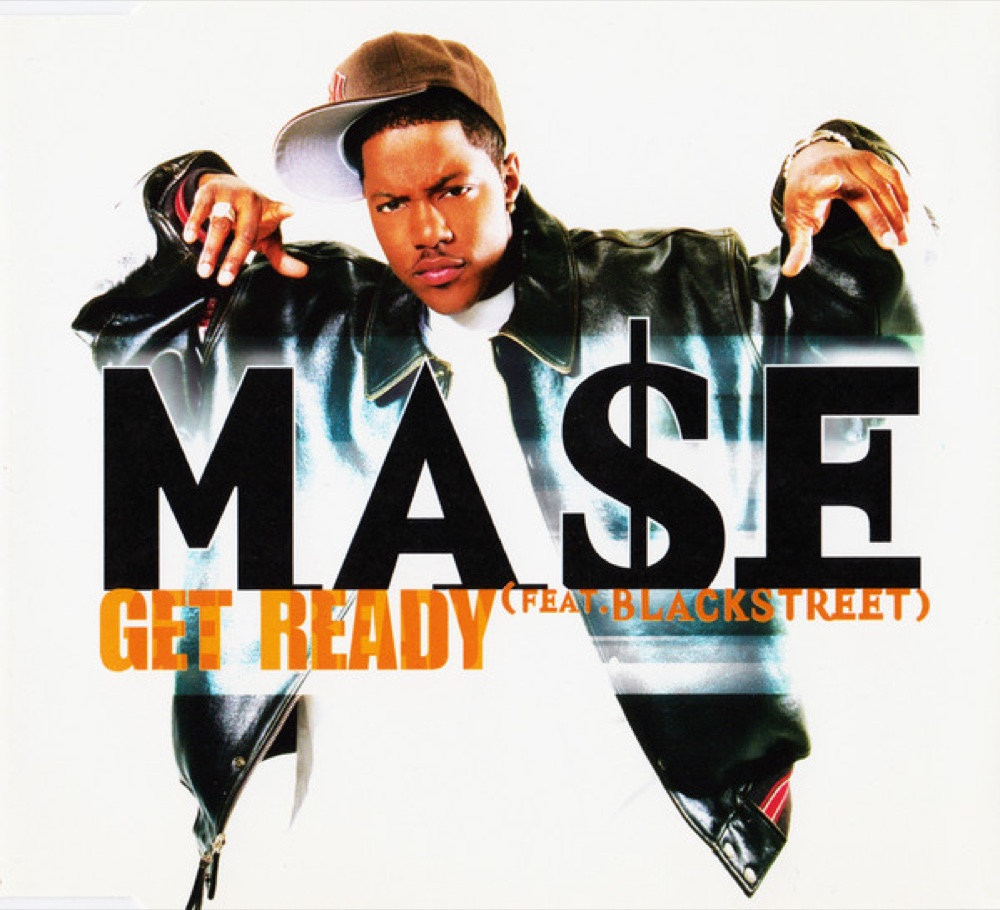
SingleMa$e feat. BLACKstreet — Get Ready
Bad Boy
- Call Out Research Hook
- Get Ready (Acappella)
- Get Ready (Instrumental)
- Get Ready (Radio Mix)
- Video Version
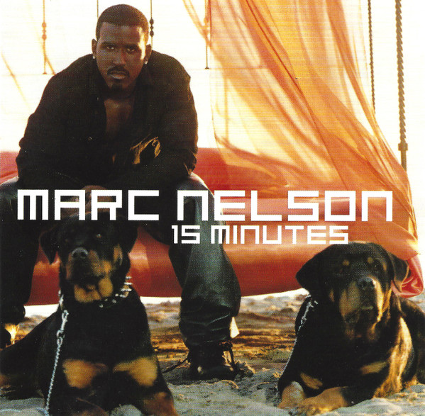
LPMarc Nelson — 15 Minutes
Columbia
- 15 Minutes (No Stoppin' Remix)
- 15 Minutes (TR Bass Remix)
- 15 Minutes (Teddy Riley Remix)
- 15 Minutes (30 Minute Slow Jam Remix)
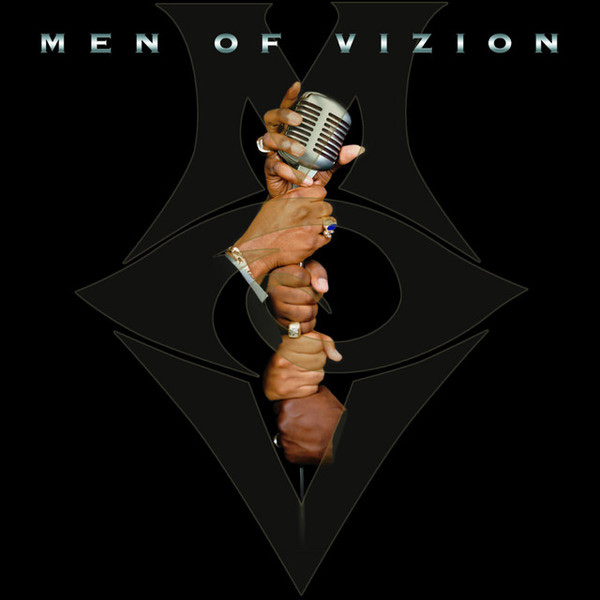
LPMen Of Vizion — MOV
MJJ Records / Epic
- 01. I Think About It
- 11. I Need Love
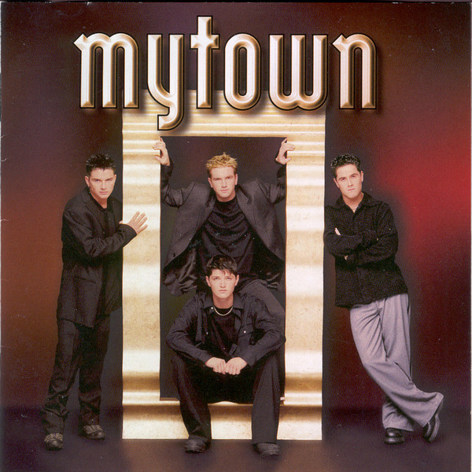
LPMytown — Mytown
Universal / Cherry
- 01. C'mon Everybody
- 02. Body Bumpin'
- 10. Everything She Wants
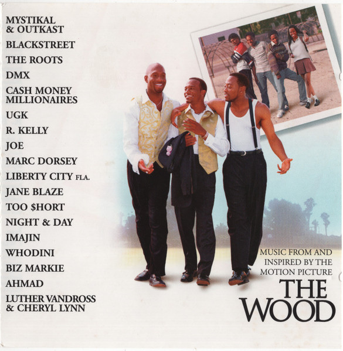
LPVarious — Music From And Inspired By The Motion Picture The Wood
Interscope
- BLACKstreet – Think About You
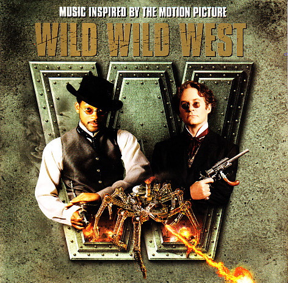
LPVarious — Music Inspired By The Motion Picture Wild Wild West
Interscope / Overbrook
- BLACKstreet - Confused
- Guy - The Best